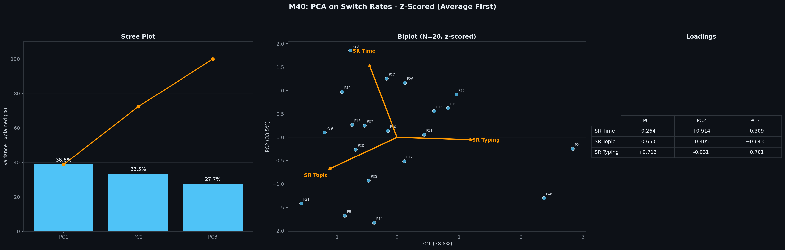
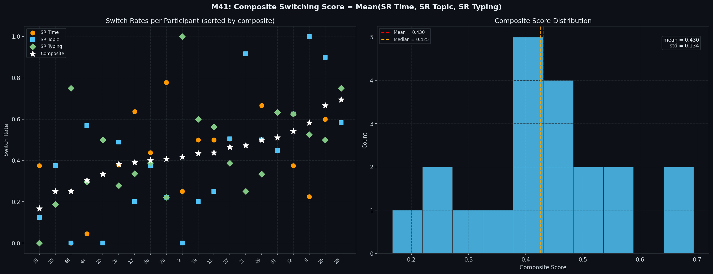

בניית משתנה תלוי: ציון מיתוג אחיד (M34-M41)
המטרה: לבנות ציון מורכב אחד לכל משתתף שמסכם כמה הוא עובר בין מצבי Explore ו-Exploit במהלך הגלישה בוויקיפדיה. ציון זה ישמש כמשתנה התלוי בהשוואה בין תנאים ניסויים.
שלב 1: שלושה אותות עצמאיים לאומדן מיתוג (M34-M36)
הגדרנו שלוש שיטות מדידה עצמאיות, כל אחת מחשבת switch rate - כמות המעברים בין Explore לבין Exploit חלקי (N-1), כאשר N הוא מספר הדפים שנצפו.
דף עם מעל 60 שניות = Exploit, אחרת Explore. מעקב אחר מעברים בין מצבים לאורך הסשן.
כל דף מקבל נושא דומיננטי מ-LDA (10 נושאים). מעבר בין נושאים = מיתוג. ניסינו גם BERTopic אך הוא הפיק רק 4 נושאים גלובליים - switch rates כמעט אפס בכלכלה.
על בסיס M18: דף עם burst הקלדה או Paste = Exploit. ללא פעילות הקלדה = Explore. Switch rate מחושב אותו הדבר.
כל סקריפט מייצר ויזואליזציות לכל דומיין (גריד של subplots לפי משתתף) וקובץ CSV עם ה-switch rates.

שלב 2: ניסיונות PCA לאיחוד האותות (M37-M40)
ניסינו מספר גישות PCA כדי לאחד את שלושת ה-switch rates לציון מורכב אחד:
| סקריפט | גישה | תוצאה |
|---|---|---|
| M37 | PCA נפרד לכל דומיין (4 PCAs) | סיור ראשוני - אין ציון מאוחד |
| M38 | ממוצע לפי דומיין קודם, אחר כך PCA ללא z-score | PC1 נשלט על ידי SR Topic (loading 0.96) - שונות גבוהה יותר |
| M39 | Pool של כל שורות, PCA, ממוצע ציונים | בעיה דומה לM38 |
| M40 | ממוצע קודם + z-score + PCA | שיקלול שווה - אך PC1 הסביר רק 39% מהשונות |

ממצא מרכזי: שלושת ה-switch rates כמעט בלתי-מתואמים זה לזה (r קרוב ל-0 בכל הזוגות). הם תופסים ממדים התנהגותיים עצמאיים - לא אותו הקונסטרקט מזוויות שונות. לכן PCA לא יכול לזהות רכיב יחיד חזק.
שלב 3: ממוצע שקלול שווה - הגישה הסופית (M41)
נוכח העצמאות של שלושת האותות, בחרנו בגישה הפשוטה ביותר: ממוצע בשקלול שווה. אין טעם לכפות מבנה לטנטי כאשר הוא לא קיים בנתונים.
כל אות תורם תרומה שווה לציון המורכב. הציון נע בין 0.17 ל-0.69 (ממוצע=0.43, SD=0.13) על פני 20 משתתפי הפיילוט - פיזור טוב לצורך השוואה בין תנאים.

הניתוח לניסוי האמיתי: כל משתתף עונה על 2 שאלות (סדר אקראי). ממצעים את שלושת ה-switch rates על פני שתי השאלות, ואז מחשבים את הממוצע הפשוט של שלושתם. המשתנה התלוי הסופי נשווה בין תנאים בבדיקת t.
סיכום פלטים
| סקריפט | פלט |
|---|---|
| M34 | 4 PNGs (לפי דומיין) + CSV |
| M35 | 8 PNGs (4 דומיינים x 2 מודלים) + 2 CSVs |
| M36 | 4 PNGs + CSV |
| M37 | 8 PNGs + 8 CSVs (PCA נפרד לכל דומיין) |
| M38 | 1 PNG + 1 CSV (avg-first PCA) |
| M39 | 1 PNG + 1 CSV (pool-first PCA) |
| M40 | 1 PNG + 1 CSV (z-scored PCA) |
| M41 | 1 PNG + 1 CSV (ממוצע סופי) |